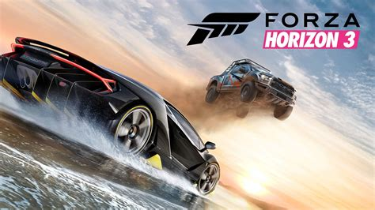
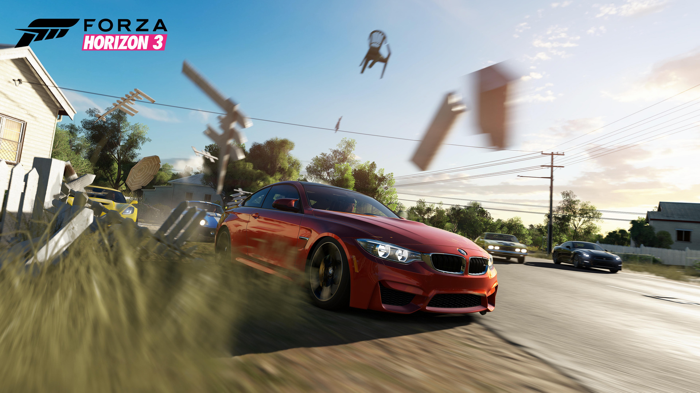
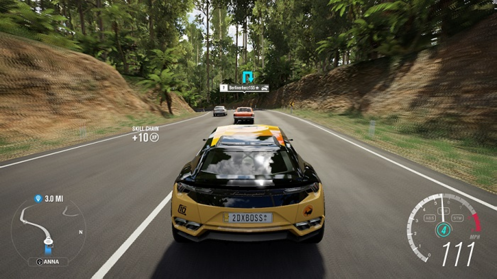
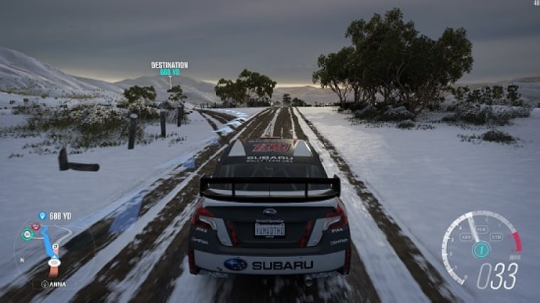
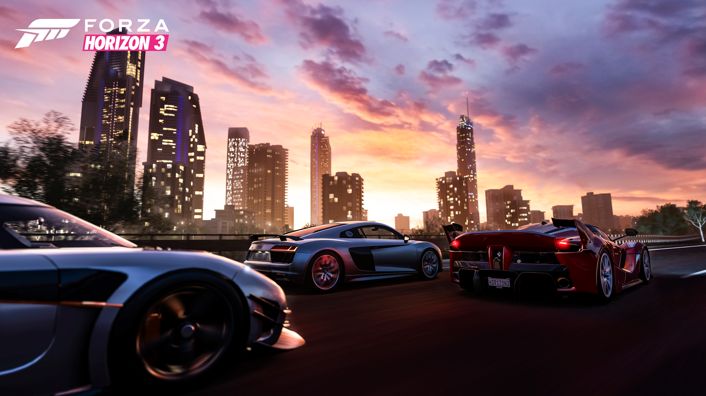
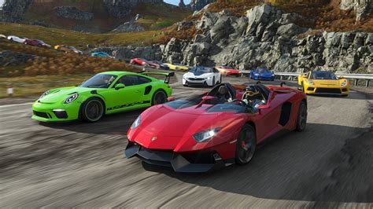
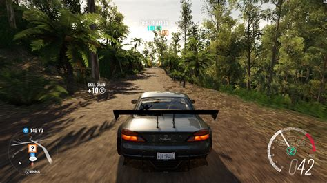
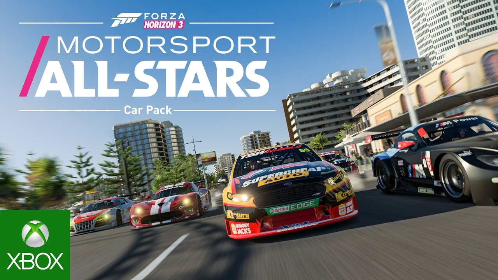

The third game in the series is Forza Horizon 3
Top
Forza Horizon 3 is a 2016 racing video game developed by Playground Games and published by Microsoft Studios for the Xbox One and Windows 10. It is the ninth instalment in the Forza series and the third instalment in the Forza Horizon sub-series. The game is set in a fictionalised Australia, where the player is the leader of the titular Horizon car festival and has to expand the festival by completing events to earn fans. Like previous Forza Horizon games, it features an open world environment where players can freely roam the map.
Forza Horizon 3 began development in 2014 after the release of Forza Horizon 2. Turn 10 Studios assisted with the game's development, as they did with other Forza Horizon games. Over the course of development, Playground Games tested different technological concepts for the game, while also trying to improve more features over the previous title. The Australian setting was chosen for its variety of regions, and a team was sent to Australia to conduct research for the game.
Gameplay
Forza Horizon 3 is a racing video game set in an open world environment based in a fictional representation of Australia. The gameplay world is about twice the size of Forza Horizon 2, and the game contains locales and regions based upon their real-life Australian counterparts. While previous Forza Horizon games have depicted the player as being one of the racers of the Horizon Festival, the player is now the director of the festival, and their role is to expand it throughout Australia by completing races, challenges, and stunts to earn fans.
Racing
Three types of racing modes are available in the game: Exhibition, Championship, and Rivals. Exhibition is a single race at one location, whereas Championship contains multiple races dispersed throughout the gameplay world. Rivals is a versus race against the player and an AI opponent, where the player has to compete in a time trial to beat the time set by the opponent. Added in Forza Horizon 2, the player can also participate in Bucket List Challenges, where they are given a task to complete with a specific vehicle. The newly introduced Horizon Blueprint feature lets the player customise races and Bucket List Challenges.
Apart from races and Bucket List Challenges, the player can engage in several other activities. Breakable boards called "bonus boards" can be discovered around the gameplay world, and when driven over, they award the player with experience points or a discount on fast travelling. As the player progresses through the game, they can receive rumours of barn finds to uncover and restore. When performing stunts with a vehicle, the player is awarded "skill points". If enough skill points are acquired, they can be used to purchase perks that may award cars, experience points, in-game currency, and driving advantages, among other benefits. The player may participate in Forzathon competitions, which provide weekly challenges and give awards once completed.
Development
Forza Horizon 3 was developed by UK-based Playground Games, the creators behind previous Forza Horizon titles. Additional work was provided by Turn 10 Studios, who made the Forza Motorsport series. The game was designed using the ForzaTech game engine, which is used for most other Forza games. The development team started conceptualizing the creation of Forza Horizon 3 in 2014 initially after Forza Horizon 2 was released. The team desired to give players more freedom in Forza Horizon 3 compared to its predecessor.
They also aimed for the game to be of better quality, therefore they sought to optimise more gameplay and graphical aspects over the previous title. One of these changes was minimizing the amount of loading screen time, as it could damage the game's impression of being persistently high quality. Creative director Ralph Fulton felt that Forza Horizon 3 was a "generational leap" over its predecessor becasuse of the work the development team put in to better improve the game.
Downloadable Content
Several downloadable content (DLC) car packs were released periodically. While most packs featured a small collection of cars, some packs had themes, such as being type specific or manufacturer specific. The car packs often had themes, such as the “Motorsport All-Stars Pack” and the “Porsche Car Pack”. The “Blizzard Mountain” expansion pack, released in December 2016, introduced a new snowy, mountainous location and new game modes. In May 2017, the “Forza Horizon 3: Hot Wheels” expansion pack was released, featuring a new area with Hot Wheels stunt track pieces. The game also had crossovers with other franchises, allowing players to obtain vehicles from Halo and Final Fantasy XV. The programming of the Final Fantasy XV car, the Quartz Regalia, into the game took about 1,500 hours due to the lack of real-world data.
